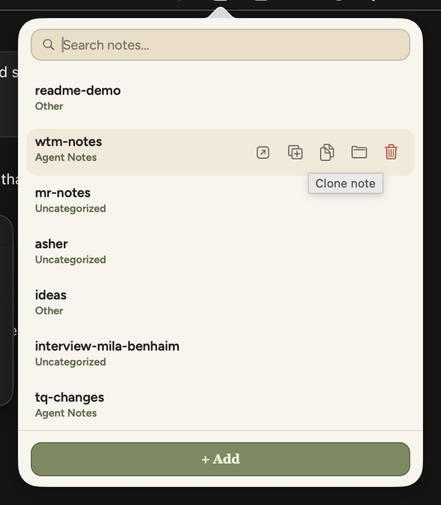
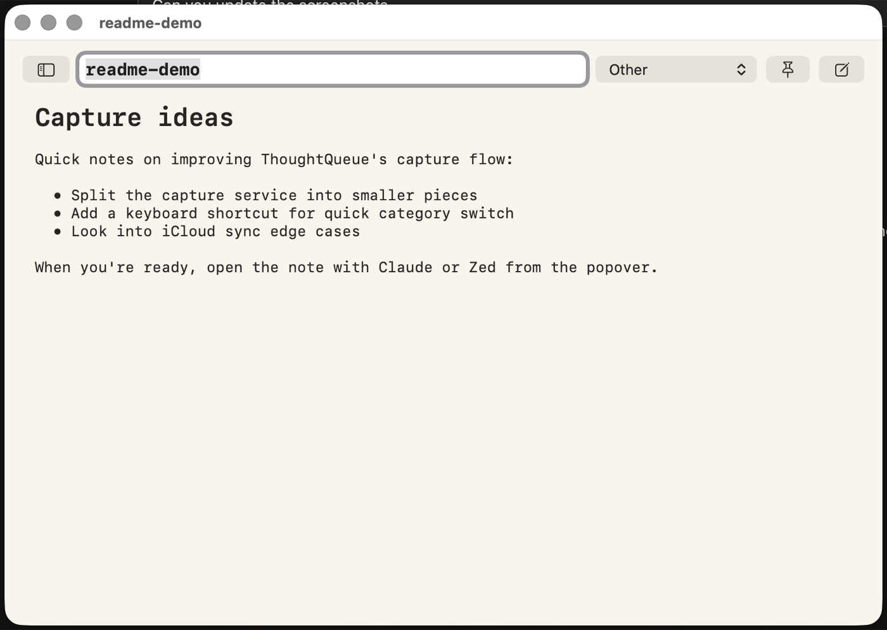
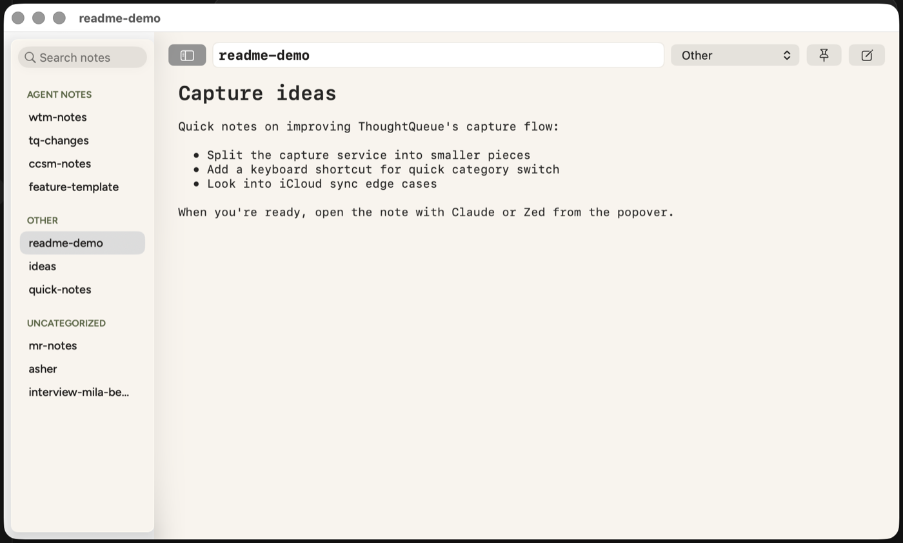
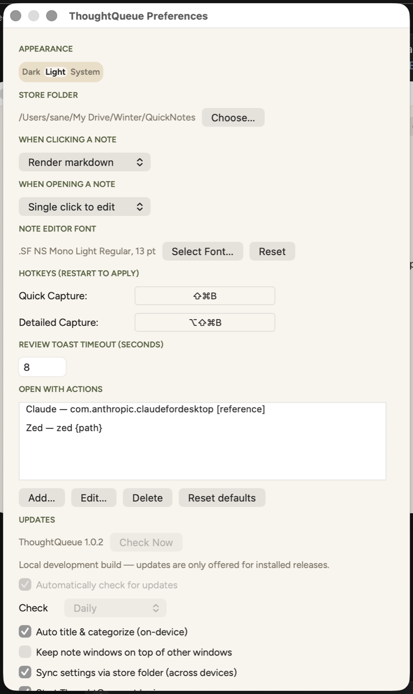

ThoughtQueue
Capture a thought without breaking flow, then send it wherever you need it next.
What it is
ThoughtQueue is a macOS menu bar app for capturing quick notes from anywhere, then doing something useful with them right away: copy them, or send them straight into whatever app or command you use next. Notes are plain markdown files on disk, not locked in a database or tied to any one destination.
It's built for the moment you're reading something, debugging code, or just thinking out loud and want to jot it down without breaking flow. Grab selected text with a hotkey (or type a note from scratch), file it into a category, and when you're ready, copy it or fire it off to an editor, a CLI tool, or an app like Claude Desktop with one click.
It's for anyone who wants a fast capture tool that stays out of the way, keeps notes as plain text you can grep and back up yourself, and lets you decide where a note goes next instead of locking you into one app.
Features
- Global hotkeys: capture selected text from any app without switching windows
- Quick and detailed capture: one shortcut saves a note instantly, another opens the note editor pre-filled with the selection so you can adjust it before saving
- Note editor: a single window per note with a view/edit toggle. Markdown renders by default; click or start typing to edit the raw text, with autosave and full undo/redo
- Navigation panel: a collapsible sidebar lists every note grouped by category, with a search field
- Run notes anywhere: configurable "Open With" destinations run a shell command against a note's file, or paste it into an app like Claude Desktop. Comes with Claude and Zed presets, and you can add your own
- Categories: organize notes however you want, with folders on disk to match, and create new ones inline as you go
- On-device auto-title and auto-category: on macOS 26+, suggests a title and category for each capture using Apple's on-device model, with a review toast to accept, tweak, or dismiss
- Local, plain-text storage: notes are markdown files in a folder you choose, no database, so they're greppable and easy to sync or back up yourself
- Synced settings: on by default, mirrors your preferences into the store folder so they follow you to your other devices if that folder is in iCloud or Dropbox
Screenshots




Getting started
ThoughtQueue builds from source with Xcode and XcodeGen; there's no App Store release. Clone the repo and run the build script for a fast, unsigned debug build:
brew install xcodegen # if you don't have it
git clone https://github.com/faulker/ThoughtQueue.git
cd ThoughtQueue
./build.sh # defaults to Debug
open build/Build/Products/Debug/ThoughtQueue.appThe repo's README covers signed release builds, running the test suite, and the rest of the feature list.